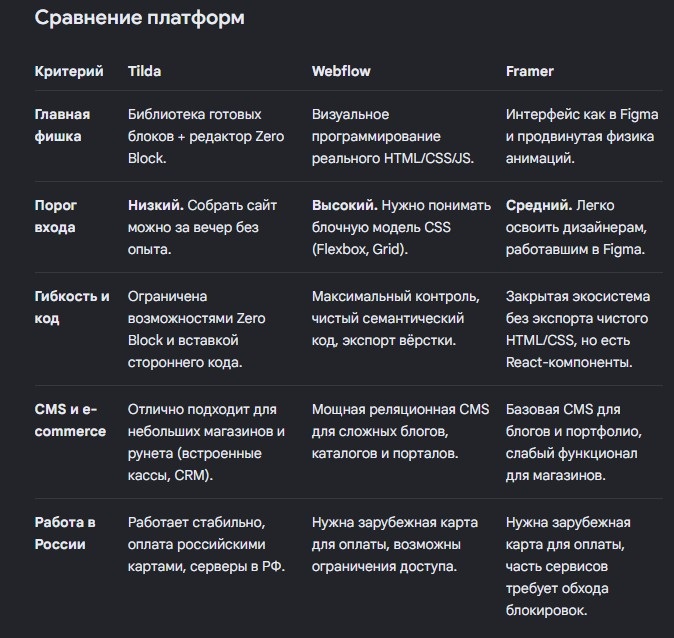

Что такое No-Code
No-Code — подход, при котором сайт собирается визуально, без написания кода. Вместо вёрстки — блоки, вместо скриптов — настройки, вместо деплоя — кнопка «опубликовать».
Для рекламного специалиста No-Code — возможность запустить лендинг за день, а не за неделю, и не зависеть от разработчика при каждой правке.
Три платформы
Три платформы, которые чаще всего встречаются в рекламной индустрии.
Tilda
Российская платформа для лендингов, промо-страниц и небольших сайтов. Сильна в блочной сборке: готовые блоки, гибкие настройки, встроенные формы и интеграции.
- Плюсы. Быстрый старт, много блоков, интеграция с CRM и аналитикой, поддержка на русском.
- Минусы. Ограниченная кастомизация, «типовые» сайты, сложнее делать нестандартные интерфейсы.
Webflow
Платформа для профессиональной сборки сайтов с полным контролем над HTML/CSS. Позволяет создавать кастомные дизайны, не выходя из визуального редактора.
- Плюсы. Гибкость почти как у кода, чистая вёрстка, CMS, анимации, экспорт кода.
- Минусы. Крутая кривая обучения, требует понимания CSS, дороже для больших проектов.
Framer
Инструмент для дизайнеров, который вырос из прототипирования в полноценную платформу для сайтов. Сильная сторона — анимации и интерактивность.
- Плюсы. Современный интерфейс, мощные анимации, быстрая публикация.
- Минусы. Меньше готовых блоков, ориентирован на дизайнеров, не на маркетологов.

CMS
CMS — система управления контентом. Она позволяет редактировать тексты, изображения и страницы без кода. В No-Code платформах CMS встроена: контент хранится в коллекциях, а страницы собираются из шаблонов.
Зачем CMS рекламному сайту:
- Быстрые правки. Маркетолог сам меняет текст и цены.
- Масштабирование. Новые страницы создаются по шаблону.
- Разделение ролей. Дизайнер отвечает за структуру, контент-менеджер — за наполнение.
Плюсы и минусы закрытых экосистем
No-Code платформы — закрытые экосистемы. Сайт живёт на их серверах, работает на их движке и зависит от их правил.
Плюсы:
- Быстрый запуск и низкий порог входа.
- Не нужно думать о серверах, безопасности, обновлениях.
- Встроенные интеграции с аналитикой, CRM, платежами.
- Поддержка и сообщество.
Минусы:
- Ограниченная кастомизация: не всё, что хочется, можно сделать.
- Зависимость от платформы: цены растут, правила меняются.
- Сложности с миграцией: перенести сайт на другой движок непросто.
- Производительность: не всегда можно оптимизировать так же, как кастомный сайт.
No-Code — инструмент, а не религия. Для промо-лендинга на две недели Tilda идеальна. Для большого продукта с нестандартной логикой — скорее нет. Выбор зависит от задачи, бюджета и сроков.
Когда No-Code уместен
- Промо-лендинги. Быстрый запуск рекламной кампании.
- Тесты гипотез. Проверить спрос до разработки полноценного сайта.
- Небольшие сайты. Визитки, портфолио, блоги.
- MVP. Минимальная версия продукта для проверки идеи.
Когда лучше кастомная разработка:
- Сложная логика и интеграции.
- Высокие требования к производительности.
- Нестандартный дизайн, который нельзя собрать из блоков.
- Долгосрочный продукт с планами на масштабирование.
No-Code делает дизайнера самостоятельным. Он может собрать лендинг, подключить аналитику и запустить кампанию без разработчика. Это ускоряет работу и повышает ценность специалиста на рынке.
Итог
No-Code и CMS сокращают путь от идеи до запуска. Они не заменяют разработку, но закрывают целый класс задач: промо, тесты, небольшие сайты. Дизайнер, который умеет работать с Tilda, Webflow или Framer, может запускать проекты сам — и быстрее проверять гипотезы.